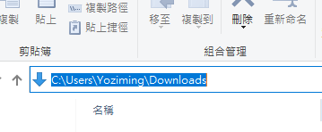
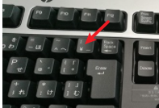
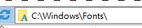

正反斜槓
引用IrisAndMimi的解釋
- 這個符號 「
/」就是斜槓slash，呈現上右下左 - 而 「
\」是反斜槓backslash，呈現上左下右 - 斜線的方向有時候容易搞混，其實只要回想一下手寫幾月幾日的時候，劃斜槓習慣往哪個方向就好了
路徑
Windows系統
-
只有Windows系統會用反斜槓
\表達路徑，原因是上古時代DOS把正斜"/“當作參數命令用走了，於是就把反斜槓這個惡魔放了出來，用它表示路徑，記憶法:Windows的W第一筆畫就是\ -
常見的Windows系統系統下的路徑:

-
除開DOS，Windows大多數情況下，用正斜槓甚至正反斜槓混著用，也都能識別路徑
-
玩日文遊戲的人可能注意過，日文的路徑是長這樣
c:￥windows￥fonts￥，其實不僅日本還有韓國的₩，他們的鍵盤反斜槓\的位置就是￥與₩ -

-
這個是編碼的歷史遺留問題，總之在日韓文系統
\=￥=₩，系統會自動轉換，不用太在意
MAC、Linux系統
- 不論是網址、MAC系統、Linux系統都是用”
/“表達路徑 
雙斜槓
-
//雙斜槓：協議和主機名之間的分隔符 （比如http://localhost:8080） -
\\雙反斜線 ：在windows里表示絕對地址的第一項，比如后面跟上IP地址的話，就是需要打開這個IP地址的網絡共享資源，舉例windows使用網路芳鄰會看到這樣:
-
在大部分的程式語言中，把
\反斜槓當作轉譯字符使用了，比如\n、\t，單用一個反斜槓很容易引起錯誤。最好還是用/正斜槓表達路徑
檔名的大小寫規則
-
檔名不分大小寫:Windows系統、MAC系統
-
檔名區分大小寫:Linux系統
-
Git則可以自己手動設定，使用命令:
git config core.ignorecase true
資料夾的命名建議
-
大寫開頭的通常是系統預設的資料夾，Windows系統、MAC系統、Linux系統都有這個特性，舉例:


-
個人在長期的、大項的、很少更動的資料夾我才用大寫開頭，其他都小寫
檔名的命名建議
-
避免搞事，有需要上傳網路的、跨平台的檔案，使用者命名時最好用全英文小寫，之間用連接符”
-“或下劃線”_“相連 -
使用符號不要超過
ASCII的範圍、不要用符號作為檔名開頭 -
更嚴謹應該也不用數字作為開頭，但我個人常用日期數字當開頭方便排序，在真有嚴格規定的地方前面多加英文字(通常是類型的縮寫)區分
-
有些程式對於空格的判斷也挺麻煩，檔名最好也不要使用任何空白，真有需要用下劃線”
_“取代
上次修改於 2021-12-10